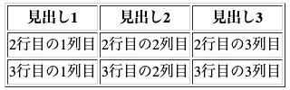

実習ファイルと提出
html17-01.html
取得・提出の案内が表示されないときは、先生に確認してください。
- 上のファイル名を確認し、「本人用HTMLを取得」を押します。別画面で自分の学校アカウントを確認し、本人用HTMLを発行してダウンロードします。
- 取得したファイルを、名前を変えずに 書類 → HTML実習 フォルダへ保存します。前の実習のHTMLも同じフォルダに置きます。
- エディタの「フォルダを接続…」でHTML実習フォルダを選び、表示された一覧から今回のHTMLを開きます。
- コードを編集し、プレビュー右上の更新アイコン（⌘Enter）で表示を確認します。上部の「保存」も押し、「Macのファイルに保存しました」の表示を確認します。
- エディタの「提出」→「提出画面を開く」から提出フォームへ進み、保存したHTMLを選んで「提出する」を押します。「提出を受け付けました」の表示まで確認してください。
初めての操作は取得・フォルダ接続・保存の詳しい手順を確認してください。フォルダ未接続時などは保存がダウンロードになるので、保存先・内容・ファイル名をFinderで確認します。
プレビュー更新とファイル保存は別の操作です。配付情報（joho-issued-htmlを含むコメント）は削除・変更しないでください。CotEditorなどで編集した場合は、上の「提出する」から提出フォームを開けます。
確認できた採点項目には ★ が付きます。受付期間内は何回でも修正して再提出できますが、同じ課題の新しい提出は 60秒以上 あけてください。
★はコードの確認結果です。画像が表示されること、リンクが開くこと、見やすさは、自分のブラウザでも確かめてください。
保存・復元で困ったとき
保存に失敗したときは、編集画面を閉じずに先生に相談してください。作業後は HTML実習 フォルダ全体を別の場所にもコピーしておくと、画像もまとめて戻せます。
次回はMacに保存したファイルを開いて続けます。ブラウザの控えは自動では開きません。万が一のときだけ「設定」→「困ったときの復旧」→「ブラウザの控えから復旧…」で選び、復旧した内容をMacへ保存してください。
提出済みのHTMLは、提出画面の「控えを保存」から控えを保存できます。これは提出時点のHTMLだけで、画像や提出後の編集内容は含みません。テンプレートを取り直しても作業途中の内容は復元されないので、編集中のファイルに上書きしないでください。
(1) テーブル（表）
テーブル関連のタグ
テーブル（表）を挿入するには次の複数のタグを組み合わせます。
| タグ |
概要 |
| <table>〜</table> |
テーブルを示すタグ。表全体を囲む。 |
| <tr>〜</tr> |
テーブルの１行を示すタグ。table rowの略。 |
| <th>〜</th> |
テーブルの１行目に見出しとなるセルを作成する。table headerの略。 |
| <td>〜</td> |
テーブルのセルを作成する。table dataの略。 |
テーブルの挿入
<table>タグだけではテーブルの罫線が表示されないため、テーブルを作成するときはborder属性を指定して<table
border="1">とします。作成後、不要であればこれを削除します。
※これはCSSを学ぶ前に、表の範囲を一時的に確認するための方法です。CSS学習後は、罫線をCSSで指定します。
<table border="1">
<tr>
<th>見出し1</th>
<th>見出し2</th>
<th>見出し3</th>
</tr>
<tr>
<td>2行目の1列目</td>
<td>2行目の2列目</td>
<td>2行目の3列目</td>
</tr>
<tr>
<td>3行目の1列目</td>
<td>3行目の2列目</td>
<td>3行目の3列目</td>
</tr>
</table>
これをブラウザで表示すると、次のようになります。エディタのプレビュー右上にある更新アイコンで確かめてみましょう。確認したら「保存」でMacのファイルにも残します。

(2) セルの結合
横方向にセルを結合する
セルを横方向につなげたいときは、つなげたいセルの<th>または<td>タグにcolspan属性を追加します。2つつなげたいときはcolspan="2"のように指定します。
<table border="1">
<tr>
<th colspan="2">見出し１と見出し2</th>
<th>見出し3</th>
</tr>
<tr>
<td>2行目の1列目</td>
<td>2行目の2列目</td>
<td>2行目の3列目</td>
</tr>
<tr>
<td colspan="3">3行目の1列目〜3列目</td>
</tr>
</table>
縦方向にセルを結合する
セルを縦方向につなげる場合は、rowspan属性を加えます。
<table border="1">
<tr>
<th>見出し1</th>
<th>見出し2</th>
<th>見出し3</th>
</tr>
<tr>
<td rowspan="2">2行目と3行目の1列目</td>
<td>2行目の2列目</td>
<td>2行目の3列目</td>
</tr>
<tr>
<td>3行目の2列目</td>
<td>3行目の3列目</td>
</tr>
</table>
(3) 実習コード④
自分でテーマを設定して、何かの表を作ってみましょう（3行3列以上の表形式であれば何でもいいです）。次の例では、時間割表を作成しています。
<table border="1">
<tr>
<th></th>
<th>月</th>
<th>火</th>
<th>水</th>
<th>木</th>
<th>金</th>
<th>土</th>
</tr>
<tr>
<td>1限</td>
<td>国語A</td>
<td>数学A</td>
<td>英語B</td>
<td>体育</td>
<td>技術</td>
<td>技術</td>
</tr>
<tr>
<td>2限</td>
<td>物理</td>
<td>英語A</td>
<td>数学B</td>
<td>国語B</td>
<td>社会A</td>
<td>化学</td>
</tr>
<tr>
<td>3限</td>
<td>情報</td>
<td>生物</td>
<td>英語B</td>
<td>数学A</td>
<td>社会B</td>
<td>地学</td>
</tr>
<tr>
<td colspan="7">昼休み</td>
</tr>
<tr>
<td>4限</td>
<td>国語A</td>
<td>地学</td>
<td>生物</td>
<td>国語B</td>
<td>英語A</td>
<td>数学B</td>
</tr>
<tr>
<td>5限</td>
<td>社会A</td>
<td>社会B</td>
<td>数学A</td>
<td>物理</td>
<td>化学</td>
<td></td>
</tr>
<tr>
<td>6限</td>
<td>英語B</td>
<td>英語A</td>
<td>数学B</td>
<td>物理</td>
<td>化学</td>
<td></td>
</tr>
</table>